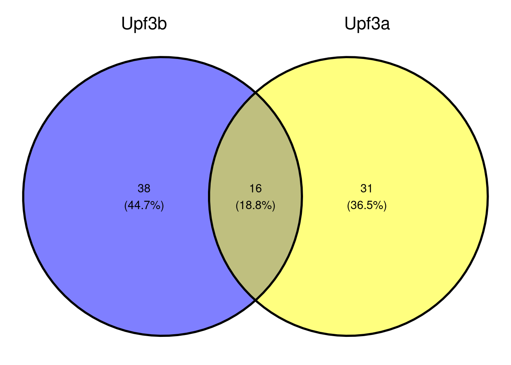
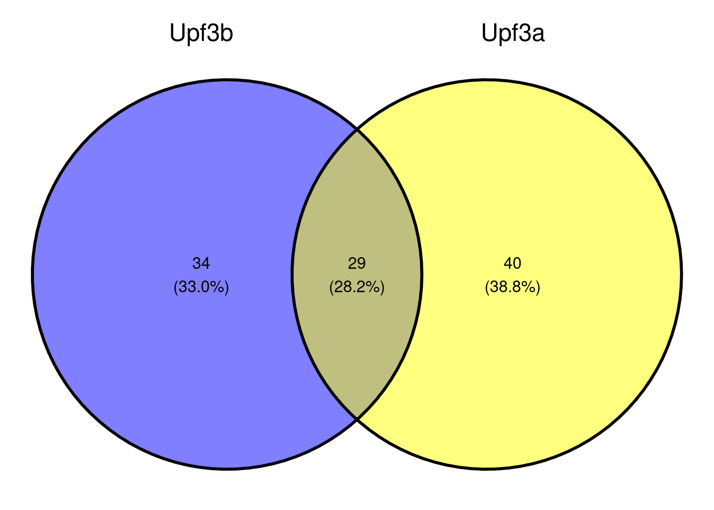
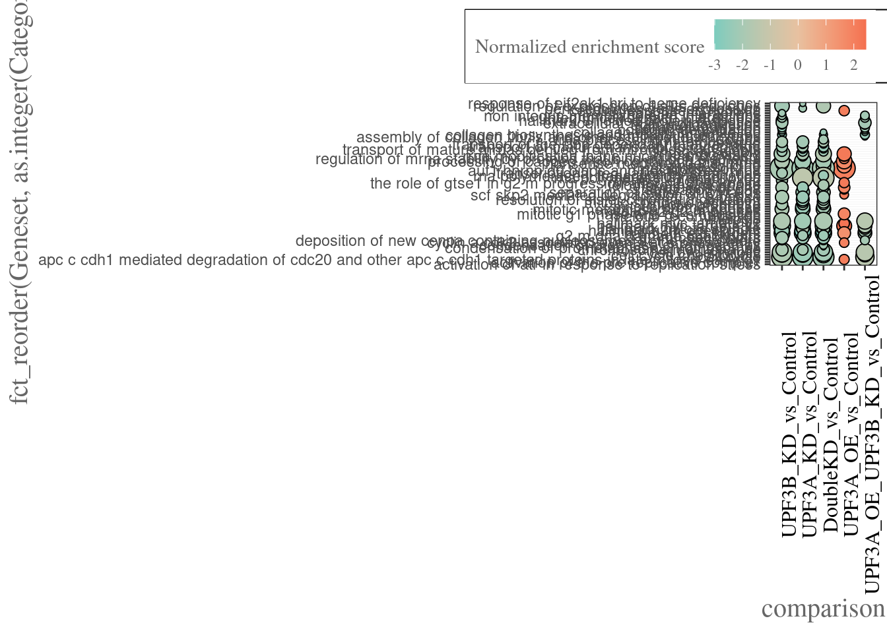
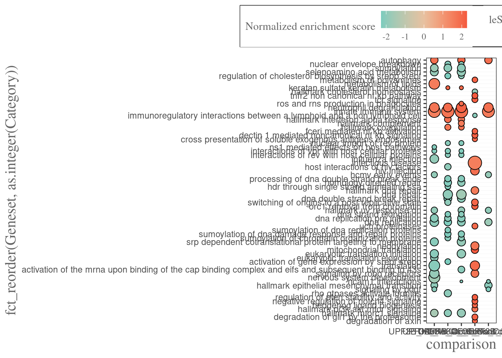

Enichment-analysis-fgsea
unawaz1996
2023-03-16
Last updated: 2026-03-05
Checks: 5 2
Knit directory: NMD-analysis/
This reproducible R Markdown analysis was created with workflowr (version 1.7.2). The Checks tab describes the reproducibility checks that were applied when the results were created. The Past versions tab lists the development history.
The R Markdown file has unstaged changes. To know which version of
the R Markdown file created these results, you’ll want to first commit
it to the Git repo. If you’re still working on the analysis, you can
ignore this warning. When you’re finished, you can run
wflow_publish to commit the R Markdown file and build the
HTML.
Great job! The global environment was empty. Objects defined in the global environment can affect the analysis in your R Markdown file in unknown ways. For reproduciblity it’s best to always run the code in an empty environment.
The command set.seed(20230314) was run prior to running
the code in the R Markdown file. Setting a seed ensures that any results
that rely on randomness, e.g. subsampling or permutations, are
reproducible.
Great job! Recording the operating system, R version, and package versions is critical for reproducibility.
Nice! There were no cached chunks for this analysis, so you can be confident that you successfully produced the results during this run.
Using absolute paths to the files within your workflowr project makes it difficult for you and others to run your code on a different machine. Change the absolute path(s) below to the suggested relative path(s) to make your code more reproducible.
| absolute | relative |
|---|---|
| /home/neuro/Documents/NMD_analysis/Analysis/NMD-analysis/output/fgsea-output.xlsx | output/fgsea-output.xlsx |
| /home/neuro/Documents/NMD_analysis/Analysis/NMD-analysis/output/DEG/Thesis_figures/WP_pathway_fgsea.svg | output/DEG/Thesis_figures/WP_pathway_fgsea.svg |
| /home/neuro/Documents/NMD_analysis/Analysis/NMD-analysis/output/DEG/Thesis_figures/KEGG_pathway_fgsea_July.svg | output/DEG/Thesis_figures/KEGG_pathway_fgsea_July.svg |
| /home/neuro/Documents/NMD_analysis/Analysis/NMD-analysis/output/DEG/Thesis_figures/HM_pathway_fgsea_July.svg | output/DEG/Thesis_figures/HM_pathway_fgsea_July.svg |
| /home/neuro/Documents/NMD_analysis/Analysis/NMD-analysis/output/Upf3b-high-confident-genes.xlsx | output/Upf3b-high-confident-genes.xlsx |
| /home/neuro/Documents/NMD_analysis/Analysis/NMD-analysis/output/DEG/Thesis_figures/fgsea_gsea_H.svg | output/DEG/Thesis_figures/fgsea_gsea_H.svg |
| /home/neuro/Documents/NMD_analysis/Analysis/NMD-analysis/output/DEG/Thesis_figures/fgsea-plots-1.svg | output/DEG/Thesis_figures/fgsea-plots-1.svg |
| /home/neuro/Documents/NMD_analysis/Analysis/NMD-analysis/output/DEG/Thesis_figures/fgsea-plots-2.svg | output/DEG/Thesis_figures/fgsea-plots-2.svg |
Great! You are using Git for version control. Tracking code development and connecting the code version to the results is critical for reproducibility.
The results in this page were generated with repository version 08bbafd. See the Past versions tab to see a history of the changes made to the R Markdown and HTML files.
Note that you need to be careful to ensure that all relevant files for
the analysis have been committed to Git prior to generating the results
(you can use wflow_publish or
wflow_git_commit). workflowr only checks the R Markdown
file, but you know if there are other scripts or data files that it
depends on. Below is the status of the Git repository when the results
were generated:
Ignored files:
Ignored: .Rhistory
Ignored: .Rproj.user/
Ignored: analysis/Differential-transcript-usage.nb.html
Ignored: analysis/Enichment-analysis-fgsea.nb.html
Ignored: analysis/Enichment-analysis-goseq.nb.html
Ignored: analysis/figure/
Ignored: tmp/
Untracked files:
Untracked: Rplots.pdf
Untracked: Upf3b-all-DEGs-genes.tsv
Untracked: Upf3b-bf-genes.tsv
Untracked: Upf3b-bf-genes.xlsx
Untracked: analysis/Differential-transcript-usage.Rmd
Untracked: analysis/Publication-Main-figures.Rmd
Untracked: analysis/Stability-DD-NMD.Rmd
Untracked: analysis/transcript-features.Rmd
Untracked: analysis/transcript-preprocessing.Rmd
Untracked: code/Archive/
Untracked: code/eisaR.R
Untracked: code/external_code/
Untracked: data/LTK_Sample Metafile_V3.txt
Untracked: data/Mus_musculus.GRCm39.105__nifs.tsv
Untracked: data/data.txt
Untracked: data/data2.txt
Untracked: data/fastq/
Untracked: data/fastqc/
Untracked: data/geneLists/
Untracked: data/genesets/
Untracked: data/genewalk/
Untracked: data/human_mouse_1to1_orthologs.csv
Untracked: data/nif_output/
Untracked: data/samples.txt
Untracked: genesets.csv
Untracked: output/Bona-fide-genes.xlsx
Untracked: output/DEG-limma-results.Rda
Untracked: output/DEG-list.Rda
Untracked: output/DEG-results.xlsx
Untracked: output/DEG/
Untracked: output/DET-analysis.xlsx
Untracked: output/DET-list.Rda
Untracked: output/EISA/
Untracked: output/Figures/
Untracked: output/For_presentation/
Untracked: output/GOseq-results.xlsx
Untracked: output/ISAR/
Untracked: output/Overlap-stability-DEG.xlsx
Untracked: output/Poster_plots/
Untracked: output/QC/
Untracked: output/RNA-stability.xlsx
Untracked: output/Stability/
Untracked: output/Thesis_plots/DD-NMD-overlaps.pdf
Untracked: output/Thesis_plots/DD-NMD/
Untracked: output/Thesis_plots/DEG_ratios.svg
Untracked: output/Thesis_plots/DEGs/
Untracked: output/Thesis_plots/DETs/
Untracked: output/Thesis_plots/GO-DEGs.png
Untracked: output/Thesis_plots/GO-DEGs.svg
Untracked: output/Thesis_plots/Gene-PCA.png
Untracked: output/Thesis_plots/NIFs/
Untracked: output/Thesis_plots/Proprotion_NIF.svg
Untracked: output/Thesis_plots/Upf2.svg
Untracked: output/Thesis_plots/Upf2_exp.png
Untracked: output/Thesis_plots/Upf3-dKD-stability-overlap.svg
Untracked: output/Thesis_plots/Upf3-dKD-stability.svg
Untracked: output/Thesis_plots/Upf3KD-overlap-DSG-DEG.pdf
Untracked: output/Thesis_plots/Upf3_cumulative.svg
Untracked: output/Thesis_plots/Upf3_paralog_cor.png
Untracked: output/Thesis_plots/Upf3_paralog_cor.svg
Untracked: output/Thesis_plots/Upf3a-bf-NIF-proportion.png
Untracked: output/Thesis_plots/Upf3a-bf-NIF-proportion.svg
Untracked: output/Thesis_plots/Upf3a-bf-candidates-features.svg
Untracked: output/Thesis_plots/Upf3a-bf-exp.svg
Untracked: output/Thesis_plots/Upf3a-bf-features.svg
Untracked: output/Thesis_plots/Upf3a-down-bf.svg
Untracked: output/Thesis_plots/Upf3a-down-exp.svg
Untracked: output/Thesis_plots/Upf3a-overlap-DSG-DEG.pdf
Untracked: output/Thesis_plots/Upf3a-stability-overlap.png
Untracked: output/Thesis_plots/Upf3a-stability-overlap.svg
Untracked: output/Thesis_plots/Upf3a-stability.png
Untracked: output/Thesis_plots/Upf3a-stability.svg
Untracked: output/Thesis_plots/Upf3a-transcript-overlap.svg
Untracked: output/Thesis_plots/Upf3a_OE_Upf3b_KD_cor.png
Untracked: output/Thesis_plots/Upf3a_Upf3dKD_cor.png
Untracked: output/Thesis_plots/Upf3a_bf_cumulative.svg
Untracked: output/Thesis_plots/Upf3a_oR_cor.svg
Untracked: output/Thesis_plots/Upf3a_specific_cumulative.svg
Untracked: output/Thesis_plots/Upf3b-NIF-proportion.svg
Untracked: output/Thesis_plots/Upf3b-bf-NIF-proportion.png
Untracked: output/Thesis_plots/Upf3b-bf-NIF-proportion.svg
Untracked: output/Thesis_plots/Upf3b-bf-candidates-features.svg
Untracked: output/Thesis_plots/Upf3b-bf-exp.svg
Untracked: output/Thesis_plots/Upf3b-bf-features.svg
Untracked: output/Thesis_plots/Upf3b-stability-overlap.png
Untracked: output/Thesis_plots/Upf3b-stability-overlap.svg
Untracked: output/Thesis_plots/Upf3b-stability.png
Untracked: output/Thesis_plots/Upf3b-stability.svg
Untracked: output/Thesis_plots/Upf3b-transcript-overlap.svg
Untracked: output/Thesis_plots/Upf3b_Upf3dKD_cor.png
Untracked: output/Thesis_plots/Upf3b_bf_cumulative.svg
Untracked: output/Thesis_plots/Upf3d-KD-candidates-features-1.svg
Untracked: output/Thesis_plots/Upf3d-KD-candidates-features-2.svg
Untracked: output/Thesis_plots/Upf3dKD-bf-NIF-features.svg
Untracked: output/Thesis_plots/Upf3dKD-bf-NIF-proportion.png
Untracked: output/Thesis_plots/Upf3dKD-bf-NIF-proportion.svg
Untracked: output/Thesis_plots/Upf3dKD-bf-candidates-features.svg
Untracked: output/Thesis_plots/Upf3dKD-stability-overlap.png
Untracked: output/Thesis_plots/Upf3dKD-stability.png
Untracked: output/Thesis_plots/Upf3dKD-transcript-overlap.svg
Untracked: output/Thesis_plots/all_overlaps-transcript-DEGs.svg
Untracked: output/Thesis_plots/all_overlaps-transcript.svg
Untracked: output/Thesis_plots/all_overlaps.svg
Untracked: output/Thesis_plots/all_overlaps_enrichment.svg
Untracked: output/Thesis_plots/overlap-bf-exp.svg
Untracked: output/Thesis_plots/overlapping-bf-features.svg
Untracked: output/Thesis_plots/overlaps/
Untracked: output/Thesis_plots/ratio_DET.svg
Untracked: output/Thesis_plots/total_DEG.svg
Untracked: output/Thesis_plots/trans-pca-final.svg
Untracked: output/Thesis_plots/trans-pca.svg
Untracked: output/Thesis_plots/transcript-gc-qc.pdf
Untracked: output/Thesis_plots/transcript_det_ma.pdf
Untracked: output/Thesis_plots/upf3a-check.svg
Untracked: output/Thesis_plots/upf3b-DEG-DSA.pdf
Untracked: output/Thesis_plots/upf3b-check.svg
Untracked: output/Thesis_plots/venn-bona-fide.pdf
Untracked: output/Transcript/
Untracked: output/Upf3b-high-confident-genes.xlsx
Untracked: output/fgsea-output.xlsx
Untracked: output/fgsea_geneset_characterization.csv
Untracked: output/isoformSwitchAnalyzeR_isoform_AA_complete.fasta
Untracked: output/isoformSwitchAnalyzeR_isoform_AA_subset_1_of_3.fasta
Untracked: output/isoformSwitchAnalyzeR_isoform_AA_subset_2_of_3.fasta
Untracked: output/isoformSwitchAnalyzeR_isoform_AA_subset_3_of_3.fasta
Untracked: output/isoformSwitchAnalyzeR_isoform_nt.fasta
Untracked: output/limma-matrices.Rda
Untracked: output/sequences/
Unstaged changes:
Deleted: .Rprofile
Modified: .gitignore
Modified: NMD-analysis.Rproj
Modified: analysis/DEG-analysis.Rmd
Modified: analysis/Differential-transcript-expression.Rmd
Modified: analysis/Enichment-analysis-fgsea.Rmd
Modified: analysis/Enichment-analysis-goseq.Rmd
Modified: analysis/Quality-control.Rmd
Modified: analysis/RNA-stability.Rmd
Modified: analysis/_site.yml
Modified: code/functions.R
Modified: code/libraries.R
Modified: output/Thesis_plots/Count_NIF.svg
Modified: output/Thesis_plots/NIF_feature_OR.svg
Note that any generated files, e.g. HTML, png, CSS, etc., are not included in this status report because it is ok for generated content to have uncommitted changes.
These are the previous versions of the repository in which changes were
made to the R Markdown
(analysis/Enichment-analysis-fgsea.Rmd) and HTML
(docs/Enichment-analysis-fgsea.html) files. If you’ve
configured a remote Git repository (see ?wflow_git_remote),
click on the hyperlinks in the table below to view the files as they
were in that past version.
| File | Version | Author | Date | Message |
|---|---|---|---|---|
| html | 8ecf3f0 | unawaz1996 | 2023-05-11 | Build site. |
| Rmd | 6025d0f | unawaz1996 | 2023-05-11 | wflow_publish(c("analysis/index.Rmd", "analysis/Differential-transcript-expression.Rmd", |
| html | 650317e | unawaz1996 | 2023-03-22 | Build site. |
| html | 1f4ee28 | unawaz1996 | 2023-03-22 | Build site. |
| Rmd | 917d8df | unawaz1996 | 2023-03-22 | wflow_publish(c("analysis/index.Rmd", "analysis/Enichment-analysis-fgsea.Rmd", |
| html | 109186b | unawaz1996 | 2023-03-22 | Build site. |
| html | 19b20b1 | unawaz1996 | 2023-03-22 | Build site. |
| Rmd | f17fc63 | unawaz1996 | 2023-03-22 | Adding fgsea results |
Fast gene set enrichment analysis
Fast Gene Set Enrichment Analysis implements a fast version of the gsea algorithm. As a result, more permutations are made to get more fine grained p-values.
fgsea results can be interpreted as following:
ES: Enrichment score which is calculated based on the rankNES: Normalized Enrichment Score
Gene sets
Hallmark Gene sets
C2 genesets
Using the MSigDB genesets as above, we will conduct a fgsea analysis on the sets of interest including KEGG, Wikipathways and Reactome. In our analysis, we will be using 2,465 gene sets in total.
Hallmark gene sets
# A tibble: 3 × 12
fgsea.Geneset fgsea.pval fgsea.padj fgsea.log2err fgsea.ES fgsea.NES
<chr> <dbl> <dbl> <dbl> <dbl> <dbl>
1 HALLMARK_UNFOLDED_PROT… 6.69e-8 8.36e-7 0.705 -0.563 -2.09
2 HALLMARK_EPITHELIAL_ME… 1.69e-6 1.69e-5 0.644 -0.519 -1.94
3 HALLMARK_UV_RESPONSE_DN 2.81e-6 2.34e-5 0.627 -0.504 -1.90
# ℹ 6 more variables: fgsea.size <int>, fgsea.leadingEdge <list>, padj <dbl>,
# leSize <int>, SYMBOL <chr>, leadingEdge <chr>
What are the genes (that are also DEG) in each category?

[1] "Slc7a11" " Mthfd2" " Mcm4" " Trib3" " Cth" " Slc1a4"
[7] " Niban1" " Elovl6" " Fads1" " Hmgcs1" " Txnrd1" " Asns"
[13] " Acly" " Hspa9" " Phgdh" " Idi1" " Psat1" " Ddit3"
[19] " Sqle" " Cyp51" " Slc7a5" " Ppp1r15a" " Gclc" " Eprs"
[25] " Wars" " Ldlr" " Plk1" " Mcm2" " Bub1" " Elovl5"
[31] " Slc1a5" " Nup205" " Hmgcr" " Nufip1" " Abcf2" " Psph"
[37] " Ero1a" " Rrp9" " Slc2a1" " Rpa1" " Qdpr" " Me1"
[43] " Aurka" " Fkbp2" " Tmem97" " Rrm2" " Idh1" Reactome datasets
Upf3a and Upf3b



Next I wanted to categorize my genesets
Creating bubble heatmaps


R version 4.5.2 (2025-10-31)
Platform: x86_64-pc-linux-gnu
Running under: Ubuntu 22.04.5 LTS
Matrix products: default
BLAS: /usr/lib/x86_64-linux-gnu/blas/libblas.so.3.10.0
LAPACK: /usr/lib/x86_64-linux-gnu/lapack/liblapack.so.3.10.0 LAPACK version 3.10.0
locale:
[1] LC_CTYPE=en_AU.UTF-8 LC_NUMERIC=C
[3] LC_TIME=en_AU.UTF-8 LC_COLLATE=en_AU.UTF-8
[5] LC_MONETARY=en_AU.UTF-8 LC_MESSAGES=en_AU.UTF-8
[7] LC_PAPER=en_AU.UTF-8 LC_NAME=C
[9] LC_ADDRESS=C LC_TELEPHONE=C
[11] LC_MEASUREMENT=en_AU.UTF-8 LC_IDENTIFICATION=C
time zone: Australia/Adelaide
tzcode source: system (glibc)
attached base packages:
[1] grid stats4 tools stats graphics grDevices utils
[8] datasets methods base
other attached packages:
[1] IsoformSwitchAnalyzeR_2.8.0 pfamAnalyzeR_1.8.0
[3] sva_3.56.0 genefilter_1.90.0
[5] mgcv_1.9-3 nlme_3.1-168
[7] satuRn_1.16.0 DEXSeq_1.54.1
[9] BiocParallel_1.42.2 ggrepel_0.9.6
[11] pander_0.6.6 msigdbr_25.1.1
[13] cowplot_1.2.0 ngsReports_2.10.1
[15] patchwork_1.3.2 VennDiagram_1.7.3
[17] futile.logger_1.4.3 UpSetR_1.4.0
[19] fgsea_1.34.2 GOplot_1.0.2
[21] RColorBrewer_1.1-3 gridExtra_2.3
[23] ggdendro_0.2.0 AnnotationHub_3.16.1
[25] BiocFileCache_2.16.2 dbplyr_2.5.1
[27] openxlsx_4.2.8 ggiraph_0.9.1
[29] wasabi_1.0.1 sleuth_0.30.1
[31] DT_0.34.0 VennDetail_1.23.0
[33] msigdb_1.16.0 GSEABase_1.70.1
[35] graph_1.86.0 annotate_1.86.1
[37] XML_3.99-0.19 pheatmap_1.0.13
[39] ggvenn_0.1.10 MetBrewer_0.2.0
[41] ggpubr_0.6.1 venn_1.12
[43] viridis_0.6.5 viridisLite_0.4.2
[45] tximeta_1.26.2 tximport_1.36.1
[47] goseq_1.60.0 geneLenDataBase_1.44.0
[49] BiasedUrn_2.0.12 org.Mm.eg.db_3.21.0
[51] EnsDb.Mmusculus.v79_2.99.0 ensembldb_2.32.0
[53] AnnotationFilter_1.32.0 GenomicFeatures_1.60.0
[55] AnnotationDbi_1.70.0 biomaRt_2.64.0
[57] edgeR_4.6.3 limma_3.64.3
[59] DESeq2_1.48.2 SummarizedExperiment_1.38.1
[61] Biobase_2.68.0 MatrixGenerics_1.20.0
[63] matrixStats_1.5.0 GenomicRanges_1.60.0
[65] GenomeInfoDb_1.44.3 IRanges_2.42.0
[67] S4Vectors_0.46.0 BiocGenerics_0.54.0
[69] generics_0.1.4 corrplot_0.95
[71] lubridate_1.9.4 forcats_1.0.0
[73] purrr_1.1.0 readr_2.1.5
[75] tidyverse_2.0.0 stringr_1.5.2
[77] tidyr_1.3.1 scales_1.4.0
[79] data.table_1.17.8 readxl_1.4.5
[81] tibble_3.3.0 magrittr_2.0.4
[83] reshape2_1.4.4 ggplot2_4.0.0
[85] dplyr_1.1.4
loaded via a namespace (and not attached):
[1] fs_1.6.6 ProtGenerics_1.40.0 bitops_1.0-9
[4] httr_1.4.7 backports_1.5.0 utf8_1.2.6
[7] R6_2.6.1 lazyeval_0.2.2 rhdf5filters_1.20.0
[10] withr_3.0.2 prettyunits_1.2.0 cli_3.6.5
[13] formatR_1.14 labeling_0.4.3 sass_0.4.10
[16] S7_0.2.0 pbapply_1.7-4 Rsamtools_2.24.1
[19] systemfonts_1.2.3 txdbmaker_1.4.2 dichromat_2.0-0.1
[22] BSgenome_1.76.0 rstudioapi_0.17.1 RSQLite_2.4.3
[25] BiocIO_1.18.0 hwriter_1.3.2.1 car_3.1-3
[28] zip_2.3.3 GO.db_3.21.0 Matrix_1.7-4
[31] abind_1.4-8 lifecycle_1.0.4 whisker_0.4.1
[34] yaml_2.3.10 carData_3.0-5 rhdf5_2.52.1
[37] SparseArray_1.8.1 blob_1.2.4 promises_1.3.3
[40] pwalign_1.4.0 crayon_1.5.3 lattice_0.22-7
[43] KEGGREST_1.48.1 pillar_1.11.1 knitr_1.50
[46] boot_1.3-32 rjson_0.2.23 admisc_0.38
[49] codetools_0.2-20 fastmatch_1.1-6 glue_1.8.0
[52] vctrs_0.6.5 png_0.1-8 locfdr_1.1-8
[55] cellranger_1.1.0 gtable_0.3.6 assertthat_0.2.1
[58] cachem_1.1.0 xfun_0.53 mime_0.13
[61] S4Arrays_1.8.1 survival_3.8-3 statmod_1.5.0
[64] bit64_4.6.0-1 progress_1.2.3 filelock_1.0.3
[67] rprojroot_2.1.1 bslib_0.9.0 DBI_1.2.3
[70] tidyselect_1.2.1 bit_4.6.0 compiler_4.5.2
[73] curl_7.0.0 git2r_0.36.2 httr2_1.2.1
[76] xml2_1.4.0 DelayedArray_0.34.1 plotly_4.11.0
[79] rtracklayer_1.68.0 rappdirs_0.3.3 digest_0.6.37
[82] rmarkdown_2.29 XVector_0.48.0 htmltools_0.5.8.1
[85] pkgconfig_2.0.3 fastmap_1.2.0 rlang_1.1.6
[88] htmlwidgets_1.6.4 UCSC.utils_1.4.0 farver_2.1.2
[91] jquerylib_0.1.4 zoo_1.8-14 jsonlite_2.0.0
[94] RCurl_1.98-1.17 Formula_1.2-5 GenomeInfoDbData_1.2.14
[97] Rhdf5lib_1.30.0 Rcpp_1.1.0 babelgene_22.9
[100] stringi_1.8.7 MASS_7.3-65 plyr_1.8.9
[103] parallel_4.5.2 Biostrings_2.76.0 splines_4.5.2
[106] hms_1.1.3 locfit_1.5-9.12 uuid_1.2-1
[109] ggsignif_0.6.4 geneplotter_1.86.0 futile.options_1.0.1
[112] BiocVersion_3.21.1 evaluate_1.0.5 lambda.r_1.2.4
[115] BiocManager_1.30.26 tzdb_0.5.0 httpuv_1.6.16
[118] broom_1.0.10 xtable_1.8-4 restfulr_0.0.16
[121] rstatix_0.7.2 later_1.4.4 memoise_2.0.1
[124] GenomicAlignments_1.44.0 workflowr_1.7.2 timechange_0.3.0
[127] here_1.0.2